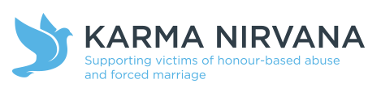

The National Police Chief Council defines Honour Based Abuse as:
“an incident or crime involving violence, threats of violence, intimidation coercion or abuse (including psychological, physical, sexual, financial or emotional abuse) which has or may have been committed to protect or defend the honour of an individual, family and/ or community for alleged or perceived breaches of the family and/or community’s code of behaviour.”
In practice, a victim of honour based abuse may disclose that they “have brought shame”, “caused dishonour” or “lost family respect” as a result of an action or ‘choice’ they have made. It Is important to remember that within some families the need to “uphold honour and/or family respect” is very important and may have severe consequences if the family code of honour and respect has been breached.
There are many potential triggers to “bringing shame” and it is important to recognise that this is subjective depending on each family. The national helpline for victims of Honour Based Abuse identifies some of the commonly recognised triggers as:
You may come across a victim of domestic abuse who discloses that they are unsure of leaving an abusive situation due to concerns of bringing shame or that by speaking out they will be perceived as bringing shame.
There is a clear intersection between domestic abuse and honour based abuse. Through recognising this, the practitioner is able to guide and support the victim in a safe and appropriate way.
Karma Nirvana operate a National helpline to support victims of honour based abuse and forced marriage:
A forced marriage is where one or both people do not (or in cases of people with learning disabilities, cannot) consent to the marriage and pressure or abuse is used.
It is an appalling and indefensible practice and is illegal in Great Britain. It is recognised as a form of violence against women and men, domestic/child abuse and a serious abuse of human rights.
A marriage must be entered into with the free and full consent of both parties; you should feel you have a choice. The pressure put on people to marry against their will can be physical (including threats, actual physical violence and sexual violence) or emotional and psychological (for example, when someone is made to feel like they’re bringing shame on their family). Financial abuse (taking your wages or not giving you any money) can also be a factor.
In some cases people may be taken abroad without knowing that they are to be married. When they arrive in that country, their passport(s)/travel documents may be taken to try to stop them from returning to the UK.
There are many different ways individuals may come to the attention of health professionals. For example, they may present to:
If you have concerns, contact your local Safeguarding Lead for advice.
If you are worried you might be forced into marriage or are worried about a friend or relative, contact the Forced Marriage Unit on: